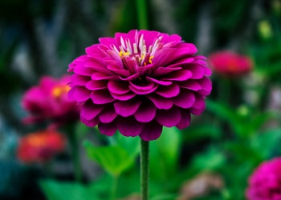

Las flores entrañan una magia cautivadora. Basta con observar el legado artesanal y las tradiciones mexicanas para deducir su profunda influencia en la cosmovisión de las culturas ancestrales y en su propia existencia, al alimentarse de tan bellos regalos emanados de la Madre Tierra.La chef e investigadora Tania Orozco, al frente del proyecto Evolución Floral, en colaboración con fitoquímicos expertos de la Universidad de Chapingo, cuenta con referencias de 186 flores comestibles, de las cuales, 80% son originarias de México.
GERANIO

Tiene un peculiar gusto dulzón que, deshidratada, aporta personalidad a diferentes panes e, incluso, vinagres. Se pueden preparar en tempura. Con esta pequeña flor blanca también se puede hacer licores o jarabes para repostería.Aunque estas bayas se pueden comer crudas, su fuerte sabor dulce supera al de otras bayas silvestres y las formas de consumo de estos frutos son más bien como alimentos derivados como mermeladas, infusiones, zumos y vinos. Se utilizan en repostería pero también para extraer su color para teñir textiles de forma natural, porque su el tono de negro azulado de su zumo se convierte en un rojo precioso al contacto con la lana
SAÚCO
Tiene un peculiar gusto dulzón que, deshidratada, aporta personalidad a diferentes panes e, incluso, vinagres. Se pueden preparar en tempura. Con esta pequeña flor blanca también se puede hacer licores o jarabes para repostería.Aunque estas bayas se pueden comer crudas, su fuerte sabor dulce supera al de otras bayas silvestres y las formas de consumo de estos frutos son más bien como alimentos derivados como mermeladas, infusiones, zumos y vinos. Se utilizan en repostería pero también para extraer su color para teñir textiles de forma natural, porque su el tono de negro azulado de su zumo se convierte en un rojo precioso al contacto con la lana
DALIA
De las dalias, es aprovechable para el consumo, tanto los tubérculos de sus raíces como sus pétalos. En el caso de los tubérculos o camotes, es recomendable lavarlos para retirar la tierra, hervirlos durante 45 minutos en olla regular o 30 minutos en olla de presión, colocarlos en una bolsa de plástico para que desprendan su piel o bien, retirar esta con un pelador de cocina. Lo siguiente, es cortarlos y cocinarlos a nuestro gusto.En el caso de los pétalos, la Asociación Mexicana de la Dalia o Acocoxochitl, recomienda desinfectarlos como cualquier otra verdura, principalmente si se van a consumir crudos, para después utilizarse enteros, troceados o molidos en nuestras recetas de cocina saladas o dulces.